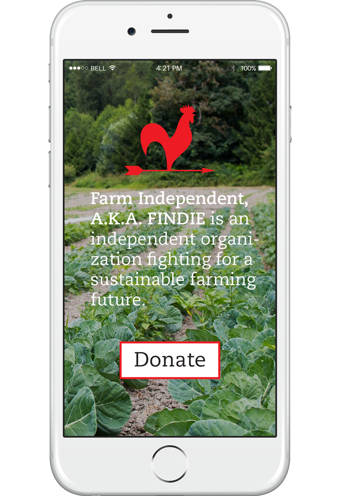
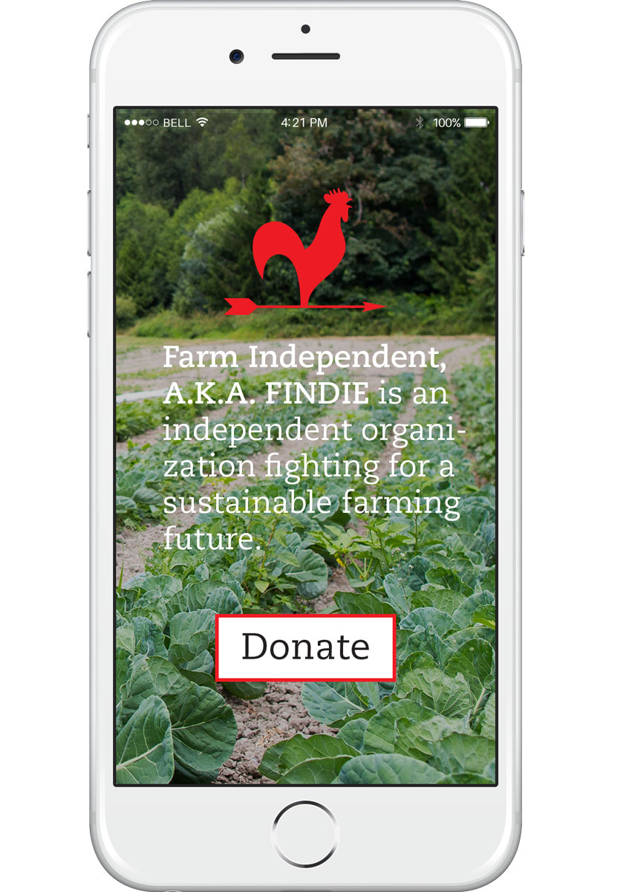
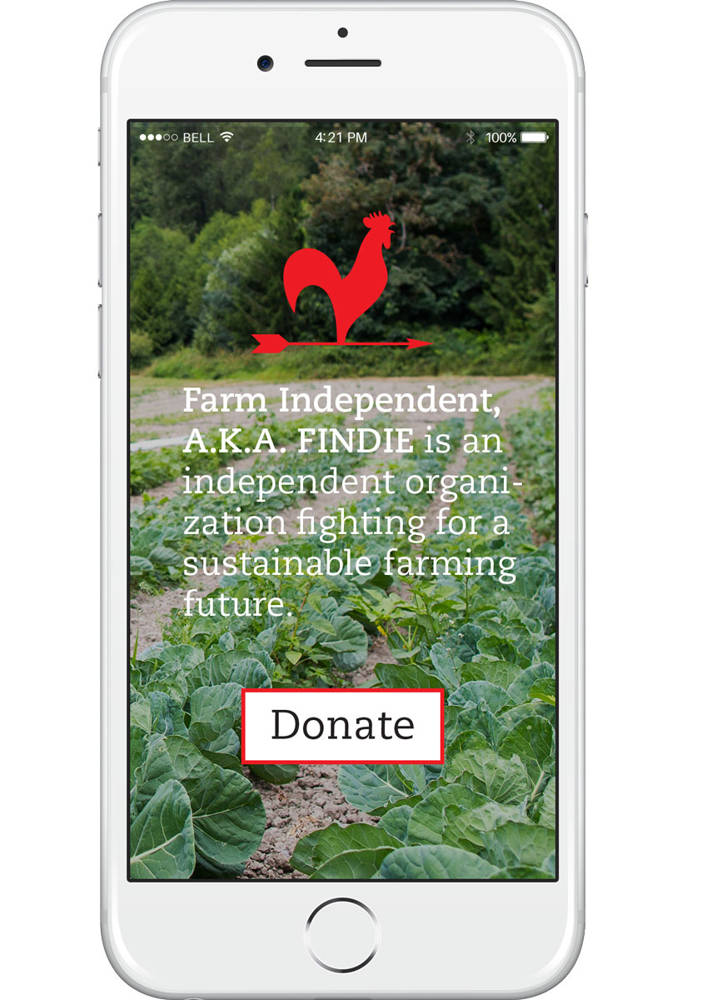

Farm Independent, A.K.A. FINDIE, is an independent organization which strives to promote farm businesses where economic viability is balanced by a duty of care within social and environmental aspects of farming. In Branding class at RISD, I designed a responsive identity for FINDIE which speaks to their mission of progress.
FINDIE's logo is intended to respond to its application. A clear picture of how it works is featured below. From the upper left, logo, logotype, call to action:
Further, that rooster weathervane has significance. Of all the farm animals, the rooster is arguably the most independent, and was selected for this reason even before I remembered the classic weathervane. The vane’s arrow was an opportunity to show FINDIE as an organization which seeks to move forward with their cause.
Above, a wordless rooster indicates there’s business to be done. Below, things get a little more playful:
